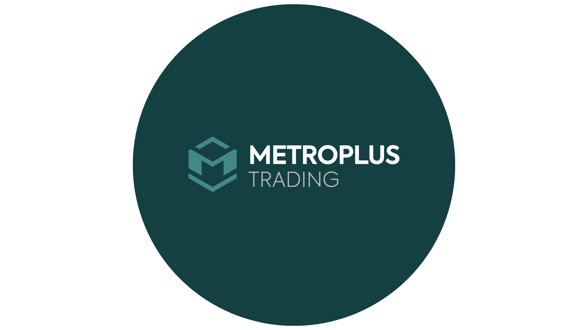
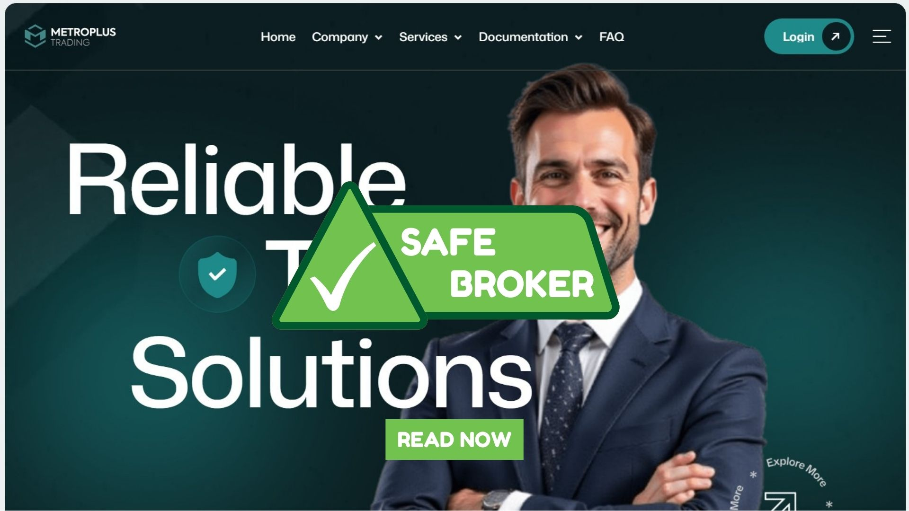

Metroplus Trading Review: Support, Security, and Platform Features
Complete analysis of the company | Prevention of fraud | Safe investment
Complete analysis of the company | Prevention of fraud | Safe investment

In a world where financial markets can feel overwhelming and out of reach, Metroplus Trading has built its mission around one clear idea: everyone deserves access to smart investing. The company is driven by a commitment to make global markets understandable, approachable, and genuinely useful for people at every stage of their financial journey. Metroplus Trading isn’t just another investment company — it’s a platform designed to empower individuals and help them succeed with confidence.
One of the key strengths of Metroplus Trading is its fast and responsive support team. Whether you have a technical issue, a question about the market, or need help navigating the platform, the company ensures that any department you contact will work promptly to resolve your request. This level of service can be particularly helpful for traders who encounter unexpected issues or require immediate assistance during trading hours.
Metroplus Trading places a strong emphasis on security and financial protection. The company’s systems ensure that only the account holder can access and withdraw funds, providing peace of mind to users. Strong encryption and strict verification procedures make it difficult for unauthorized parties to interfere with accounts, which is essential for anyone trading with real money.
The trading platform offered by Metroplus Trading is user-friendly and accessible across devices, including PCs, tablets, and smartphones. This allows traders to manage positions, monitor market changes, and execute trades from virtually anywhere. The intuitive design and straightforward navigation make it suitable for both beginners and experienced traders, while advanced tools remain easily accessible for in-depth analysis.
Another advantage of Metroplus Trading is the speed of withdrawals. Users can request funds and receive them quickly, even via international bank transfers, which typically take a maximum of 2 business days. This efficiency provides traders with confidence that their profits are accessible when needed and reduces the uncertainty often associated with delayed withdrawals at other brokerages.
Overall, Metroplus Trading combines reliable support, strong security measures, an accessible trading platform, and fast withdrawals to create a comprehensive trading environment. While every trader will have different priorities, the combination of these features makes the company particularly appealing for those who value quick assistance, data protection, and the flexibility to trade from multiple devices.
